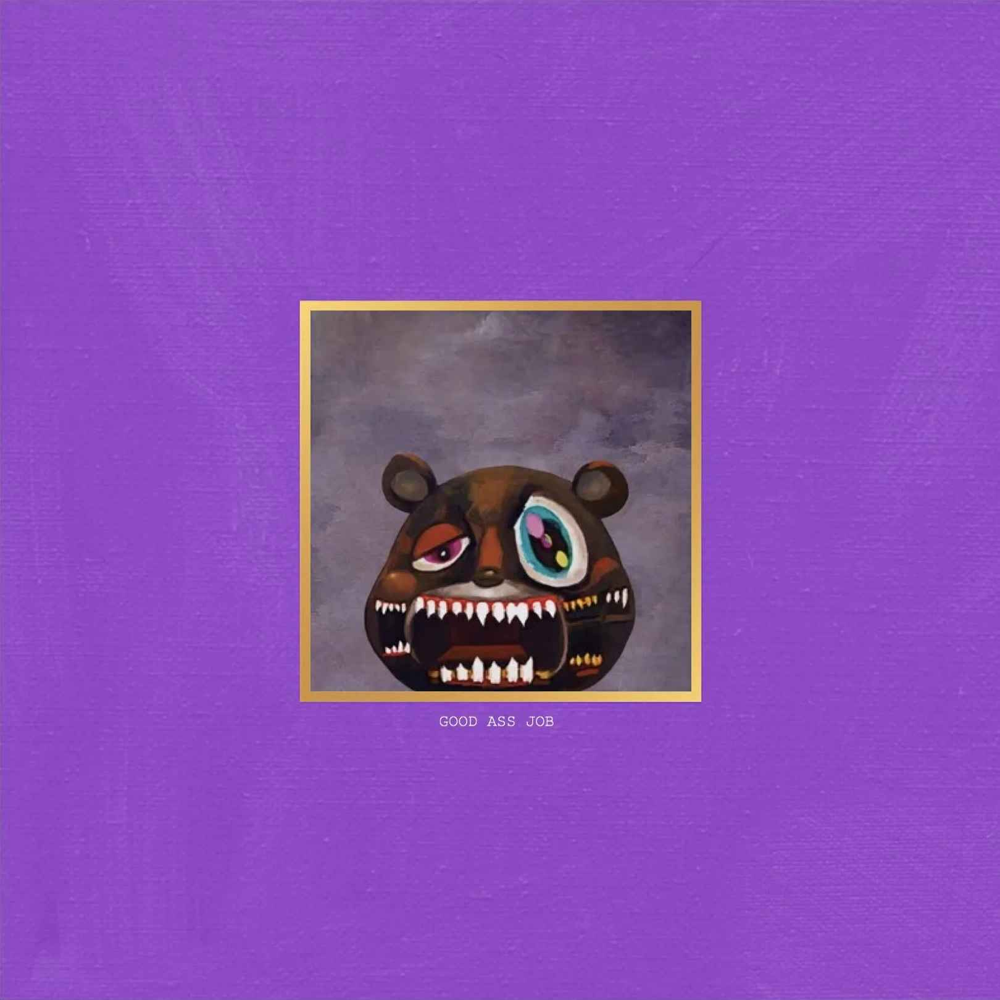
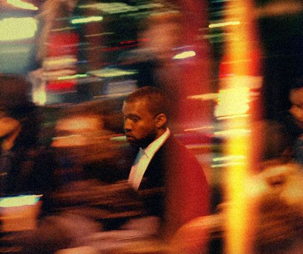

MY FAVORITE KANYE ALBUM NEVER CAME OUT
01/02/23- edited 8/20/25
Good Ass Job is an unreleased Kanye West album from 2008-2009. It was originally going to be the 4th entry in the dropout series of albums. It was being worked on up until the loss of his mother and his breakup, which led to the creation of 808s & Heartbreak. After 808s, Kanye came back to Good Ass Job until he interrupted Taylor Swift's acceptance speech at the 2009 VMAs, causing Good Ass Job not to release.
After the VMAs incident, Kanye left America for Rome and Japan. His time spent in japan inspired a lot of Good Ass Job's sound. Because of the inspiration Kanye got from being in Japan and the futuristic vibes inspired by Akira, this is my personal favorite Kanye album. It always gives me vibes of walking around a lit up Shibuya at night and there is no one around.
KANYE WEST - GOOD ASS JOB (2009)
This album never had an official tracklist (that we've seen) so I made my own. It is 15 tracks, mostly consisting the 808's & Heartbreak esque tracks. Some people like to make a tracklist closer to My Beautiful Dark Twisted Fantasy by using G.O.O.D Fridays songs and leaks from that era but I prefer this vibe.
- I'll Be Alright
- Takin Off
- Crazy Life
- Lonely
- Eyes Closed
- Only For The Night (Interlude)
- Mama's Boyfriend
- Throw Money Everywhere
- Flashing Lights 2
- Hard Horn Nightmare
- Diamonds & Dollars
- Heartbreaker
- Shoot Up
- Downtown
- See Me Again
SONG INFO
The most popular song here (and probably the most popular Kanye leak in general) is See Me Again (AKA Never See Me Again). There were rumors this song was Kanye's suicide note, however we now know that is not true. The rumor started because of the general tone of the song, as Kanye is saying you will never see him again and it has a simple piano instrumental. There is also the sample which comes from Futari Dake No CEREMONY by Yukiko Okada, a japanese musician who jumped out of her hotel window during a similar situation to the one Kanye was in at that time. The end of her suicide note read "I wanted to see him again". Kanye also mentions jumping out of a window on POWER. That is the general history of this rumor. While its not entirely impossible this rumor is true, we now believe that Never See Me Again was just a farewell letter to the fans before Kanye would quit making music due to the backlash following the Taylor Swift VMAs incident.
Another notable song is Flashing Lights 2. This song has an interesting history as not much is known about it. This song has never had a high quality leak, nor a full length leak. The linked version of the song is an edit by Matsu. It is unknown if there even is a full recorded version of this song as all we have is a clip of Kanye singing the chorus in the studio and a performance he did in Saudi Arabia. This edit also uses Kanye's verse from Ayy Girl by JYJ, a K-Pop song that Kanye gave the beat for Flashing Lights 2 to. This song is my personal Kanye grail, if it ever leaks i will squeal.